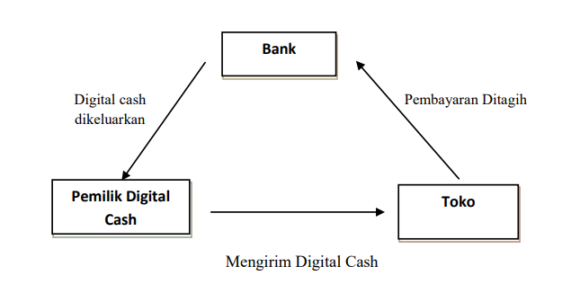

Dalam pembayaran uang elektronik dengan metode Electronic Funds Transfer (EFT), e-Cash, dan Credit
Card, berikut adalah proses yang terjadi dalam pembayarannya:
EFT: pelayanan transfer yang diberikan oleh bank dengan menggunakan teknik elektronik. EFT ini pada
dasarnya bisa digunakan untuk melakukan transaksi kartu kredit, mesin ATM, dan juga melakukan
transfer dana baik kepada sesama bank atua antarbank. EFT ini akan menggunakan dana yang ada di
rekening kita sehingga dana yang ada akan terhubung dengan rekening bank.
E-Cash: merupakan uang elektronik yang memiliki nilai bit dan byte dan hanya dikeluarkan oleh
institusi legal yang sudah disetujui oleh Otoritas Jasa Keuangan (OJK). Proses yang terjadi pada
e-cash adalah konsumen akan membeli e-cash dari bank atau layanan yang dipilih, bank akan
mengirimkan e-cash kepada pengguna sejumlah yang dibeli, dana tersebut akan digunakan untuk membeli
barang pada merchant, dana akan dikonfirmasi oleh bank ketika akan digunakan.
Credit card: alat pembayaran yang diterbitkan oleh bank untuk digunakan dalam belanja secara ritel
dan menggunakan sistem kredit. Biaya yang terjadi pada pembelian dengan kartu kredit ini akan
diselesaikan terlebih dahulu oleh bank dan hutang tersebut akan dipenuhi oleh konsumen pada saat
jatuh tempo. Proses yang terjadi adalah konsumen membeli barang dengan kartu kredit, penjual akan
mengkonfirmasi transaksi kepada bank yang bersangkutan, bank akan mengkonfirmasi transaksi dan dana
disalurkan kepada penjual, dan transaksi sudah berhasil dilakukan.